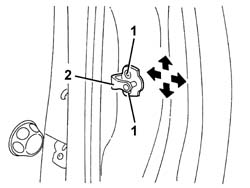

7005A10 FRONT SIDE DOOR - ADJUST STRIKER AND ADAPT SEAL IN NECESSARY
- Path
- Procedures > 70 FITTINGS > 7005 PASSENGER COMPARTMENT FRONT SIDE DOORS > 7005A LOCATION OF FRONT DOOR WIND NOISES > 7005A10 FRONT SIDE DOOR - ADJUST STRIKER AND ADAPT SEAL IN NECESSARY
- Kind
- repair procedure (removal / refitting; the operation number is the code)
- Applies to
- all engines; all production periods
- Interactive page
- https://sloeber94.github.io/elrnDB-aGt/en/#/125001758
Applies to: all engines; all production periods
Before altering the position of the door striker, ensure the door is properly aligned.
1. Loosen the striker retaining screws.
2. Use the bolt slots to move the striker into the correct position.

Applies to: all engines; all production periods
Tighten the fixing bolts.
 | Fastening | Component | Ø | Value (daNm) |
|---|---|---|---|---|
- | Bolt | STRIKER ON FRONT SIDE DOOR PILLAR | M8 | 2.4 |
Check the striker and catch fit together properly and ensure the door is aligned when closed.